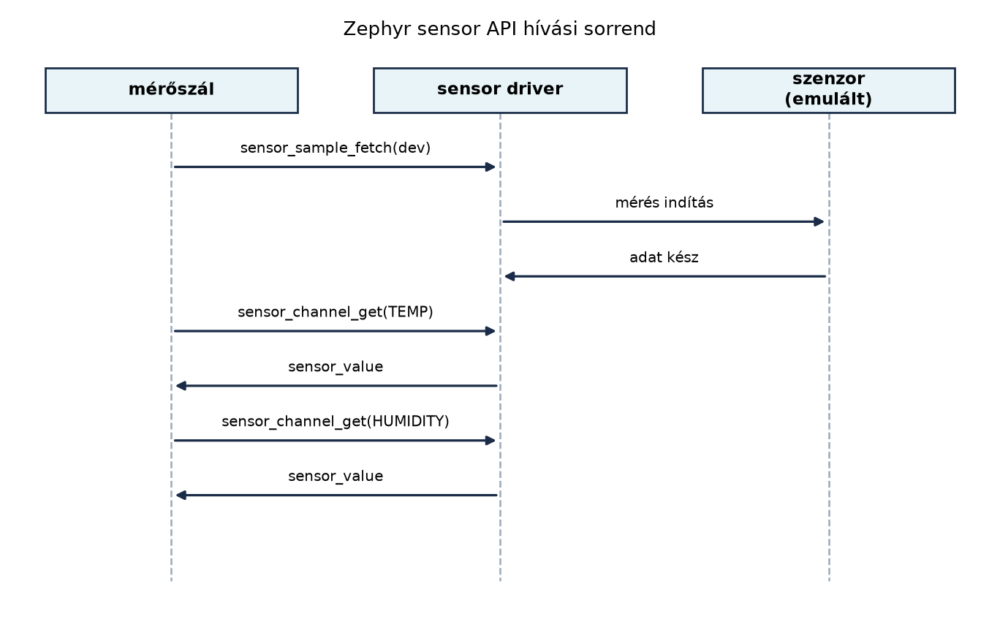

A TerraSense üvegház-monitorozó csomópontjának első és legfontosabb
feladata, hogy a környezeti adatokat megbízhatóan, a fizikai valóságnak
megfelelően kiolvassa. A hőmérséklet és a relatív páratartalom olyan
analóg jelek, amelyeket a mikrovezérlő digitális világába át kell
ültetni. A Zephyr RTOS ezt a feladatot a sensor API
mögé szervezi: nem kell ismernünk az adott szenzor I2C- vagy
SPI-regisztereit, a driverréteg már elvégzi a nyers bájtok és a fizikai
mennyiségek közötti átalakítást. Ebben az alfejezetben bekötjük a
ts-node emulált hőmérséklet- és páratartalom-szenzorát, és
egy újrahasznosítható mérési függvényt készítünk, amelyet a későbbi
szűrés, architektúra- és hálózati rétegek is használnak.
Az előző alfejezetben (Szinkronizáció és
üzenetátadás) definiáltuk a ts_sample rekordot és az
sample_msgq üzenetsort. Most ezt a struktúrát töltjük meg
éles, szenzorból származó adatokkal. A cél, hogy a mérőszál ne
keveredjen a kommunikációval: a mérési logika egyetlen függvényben
legyen, amely bármelyik későbbi rétegből hívható.
A Zephyr szenzormodell két műveletet választ szét: az adatgyűjtést és az adatlekérdezést. Ez azért fontos, mert sok szenzor nem folyamatosan mér, hanem csak egy trigger hatására indít mintavételt (például egy I2C-parancs után néhány milliszekundumig tart az analóg-digitális átalakítás).
Definíció (sensor API fetch/get).
A sensor_sample_fetch() hívás utasítja a driver-t, hogy
indítson el egy mérési ciklust, és várja meg, amíg az adat rendelkezésre
áll. A sensor_channel_get() ezt követően kérdezi le a
kiválasztott csatorna (például hőmérséklet, páratartalom) értékét. A
fetch tehát az adatgyűjtés, a get a már
begyűjtött adat kiolvasása.
A csatornák az enum sensor_channel értékeivel
azonosíthatók: SENSOR_CHAN_AMBIENT_TEMP a környezeti
hőmérséklet, SENSOR_CHAN_HUMIDITY a relatív páratartalom,
SENSOR_CHAN_PRESS a légnyomás, és így tovább.
A mért értéket a driver a sensor_value struktúrában adja
vissza:
struct sensor_value {
int32_t val1;
int32_t val2;
};A val1 az egész rész, a val2 a
mikro-egységben kifejezett törtrész (általában 10⁻⁶, de a driver ettől
eltérő felbontást is használhat). A javasolt átváltás a
sensor_value_to_double() függvénnyel történik.

A Zephyr eszközmodellben a szenzor is egy device
objektum. A devicetree-ben definiált csomópontból a
DEVICE_DT_GET() makróval, a node labeljére hivatkozva
kérhető le a mutató:
const struct device *dev = DEVICE_DT_GET(DT_NODELABEL(temp_sensor));A DEVICE_DT_GET_ANY() akkor hasznos, ha a compatible-ből
indulunk, és nem ismerjük a node labeljét; a laborban a label stabil,
ezért a DEVICE_DT_GET(DT_NODELABEL(...)) a pontosabb, mert
fordítási időben ellenőrzi, hogy a node létezik és engedélyezett.
Ezután a device_is_ready(dev) ellenőrzi, hogy a driver
inicializálódott-e, és a hardver elérhető-e. Ha a mutató
NULL vagy a device_is_ready() hamis, akkor nem
szabad hívni a sensor API-t.
A hiba- és állapotkezelés a Zephyr negatív errno-konvencióját követi:
a függvények 0-t adnak vissza siker esetén, hiba esetén pedig
-ENODEV, -EBUSY, -EIO és hasonló
értékeket. A mérési ciklusban ezekre külön reagálhatunk: az
-EBUSY és -EAGAIN átmeneti hibák, amelyek után
érdemes rövid késleltetéssel újra próbálkozni.
A szenzor API-n belül több tervezési döntés is felmerül:
| Kérdés | Opciók | Mire érdemes figyelni |
|---|---|---|
| Fetch és get szétválasztása | a) sensor_sample_fetch() + több
sensor_channel_get() b)
sensor_sample_fetch_chan(dev, chan) csatornánként |
a) hatékonyabb, ha egyszerre több csatornát olvasunk; b) egyszerűbb, de többszöri mérést indíthat |
| Érték kinyerése | val1/val2 közvetlen feldolgozása vagy
sensor_value_to_double() |
Lebegőpontos lebegés pontossága elegendő; ha bitpontos átvitel kell,
őrizzük meg a nyers sensor_value párt |
| Hiba újrapróbálkozás | azonnali visszatérés, fix késleltetés, exponenciális visszavonulás | Átmeneti -EBUSY esetén rövid késleltetés; tartós hiba
esetén jelezzük a felügyeleti rétegnek |
| Szenzor kiválasztása | gyártó-specifikus driver vs. saját emulált driver | native_sim-en a labor saját lab,emul-temp
driverje fut; éles hardverre a devicetree overlay és a
compatible cseréje szükséges |
A TerraSense esetében a fetch/get szétválasztást választjuk, mert egyetlen fetch-csel mindkét csatornát (hőmérséklet, páratartalom) be tudjuk tölteni. A talajnedvesség mérése későbbi laborban kerül hozzá.
sensor_value átváltás és minta kitöltéseTegyük fel, hogy a hőmérséklet-szenzor a sensor_value
struktúrában a következőt adja vissza:
val1 = 23, val2 = 450000 →
23,45 °Cval1 = 45, val2 = 200000 →
45,20 %RHA sensor_value_to_double() ezt a két mezőt
val1 + val2 * 1e-6 módon összegzi. A mérési függvényünk
ezeket az értékeket a ts_sample struktúrába írja:
sample->temperature_c = sensor_value_to_double(&temp_val);
sample->humidity_rh = sensor_value_to_double(&hum_val);
sample->soil_moisture_pct = 0.0f;
sample->soil_moisture_valid = false; /* ebben a laborban nincs talajszenzor */A nem mért talajnedvességet nem lehet 0.0-val
„kitölteni”: a nulla érvényes, csontszáraz talajérték, és egy későbbi
öntözési szabály éppen ebből indítaná a locsolást. Ezért a rekord külön
validitásjelzőt visz
(soil_moisture_valid), és a feldolgozó réteg csak akkor
használja a számértéket, ha a jelző igaz. A hiányzó mérés így nem
téveszthető össze a mért nullával; a telemetriában a mező el is
hagyható, vagy explicit null lehet.
A ts_sample seq (sorszám),
uptime_ms és event_ts_epoch_ms mezőit a
mérőszál tölti ki, mert azok nem a szenzor driver hatáskörébe tartoznak.
A seq egy monoton növekvő egyedi azonosító, az
uptime_ms jelen laborban a k_uptime_get()
értéke (a rendszer indulása óta eltelt ezredmásodperc). Az
event_ts_epoch_ms a szerződés szerinti UTC idő; amíg a
ts-node órája nincs szinkronizálva, értéke 0, és a
ts-gw a vétel idejével becsüli, ahogy azt az Idő az IoT-ban alfejezet tárgyalja.
ts-node
emulált szenzorralMunkakönyvtár:
mkdir -p ~/iot-labor/i013 && cd ~/iot-labor/i013
mkdir -p src boardsElőfeltétel: a Szinkronizáció és
üzenetátadás: mutex, szemafor, üzenetsor, work queue laborban
létrehozott ts_sample struktúra és sample_msgq
mintáját itt újrahasznosítjuk. A teljes fájlt a Szenzorolvasás a Zephyr sensor API-val alfejezetben
készítjük el, de a korábbi labor logikáját megtartjuk.
Fájlok:
CMakeLists.txt:cmake_minimum_required(VERSION 3.20.0)
find_package(Zephyr REQUIRED HINTS $ENV{ZEPHYR_BASE})
project(ts-node-sensor)
target_sources(app PRIVATE src/main.c)
target_sources_ifdef(CONFIG_LAB_EMUL_TEMP app PRIVATE src/lab_emul_temp.c)prj.conf:CONFIG_LOG=y
CONFIG_SENSOR=y
CONFIG_SENSOR_LOG_LEVEL_DBG=y
# A saját, alkalmazásba épített lab,emul-temp driver bekapcsolása.
CONFIG_LAB_EMUL_TEMP=y
# A LOG_INF("%.2f", ...) lebegőpontos formázásához; enélkül a %f nem működik.
CONFIG_CBPRINTF_FP_SUPPORT=y
# A 64 bites uptime/epoch mezők %lld formázásához.
CONFIG_CBPRINTF_FULL_INTEGRAL=yKconfig:menu "TerraSense lab drivers"
config LAB_EMUL_TEMP
bool "Emulált hőmérséklet- és páratartalom-szenzor (lab,emul-temp)"
default y
depends on SENSOR
help
Az i013 labor saját, alkalmazásba épített szenzordriverét
fordítja. A lab,emul-temp devicetree node-hoz tartozik; a
laborban maradjon bekapcsolva, mert a main.c erre a node-ra
hivatkozik.
endmenuboards/native_sim.overlay:/ {
temp_sensor: temp_sensor@0 {
compatible = "lab,emul-temp";
reg = <0>;
sample-interval-ms = <1000>;
status = "okay";
};
};dts/bindings/sensor/lab,emul-temp.yaml – a saját node
bindingja:description: |
TerraSense laboratóriumi, emulált hőmérséklet- és páratartalom-szenzor.
A driver determinisztikus, az uptime-ból számított illusztratív értékeket
ad, hogy a labor valós hardver nélkül is reprodukálható legyen.
compatible: "lab,emul-temp"
include: base.yaml
properties:
sample-interval-ms:
type: int
required: true
description: |
A mérési periódus ezredmásodpercben; a 0 érték érvénytelen.
report-die-temp:
type: boolean
description: |
Ha jelen van, az adott példány a SENSOR_CHAN_DIE_TEMP csatornát
szolgálja ki (a laborban a talajhőmérséklet helyettesítésére).src/lab_emul_temp.c – a saját szenzordriver:/*
* Minimális, alkalmazásba épített szenzordriver a lab,emul-temp
* compatible-hez. Nem a Zephyr faának része: az alkalmazás forrásából
* fordul, és a Zephyr 3.7 LTS sensor API-ját használja.
*/
#define DT_DRV_COMPAT lab_emul_temp
#include <zephyr/device.h>
#include <zephyr/devicetree.h>
#include <zephyr/drivers/sensor.h>
#include <zephyr/kernel.h>
#include <zephyr/logging/log.h>
#include <errno.h>
#include <stdbool.h>
#include <stdint.h>
LOG_MODULE_REGISTER(lab_emul_temp, CONFIG_SENSOR_LOG_LEVEL);
struct lab_emul_temp_config {
uint32_t sample_interval_ms;
bool report_die_temp;
};
struct lab_emul_temp_data {
struct sensor_value temp;
struct sensor_value humidity;
struct sensor_value die_temp;
};
static int lab_emul_temp_sample_fetch(const struct device *dev,
enum sensor_channel chan)
{
const struct lab_emul_temp_config *cfg = dev->config;
struct lab_emul_temp_data *data = dev->data;
uint32_t tick = (uint32_t)(k_uptime_get() / cfg->sample_interval_ms);
int32_t milli;
if (chan != SENSOR_CHAN_ALL && chan != SENSOR_CHAN_AMBIENT_TEMP &&
chan != SENSOR_CHAN_HUMIDITY && chan != SENSOR_CHAN_DIE_TEMP) {
return -ENOTSUP;
}
if (cfg->report_die_temp) {
/* Illusztratív, determinisztikus fűrészjel 18,000-19,000 °C között. */
milli = 18000 + (int32_t)((tick * 97U) % 1000U);
data->die_temp.val1 = milli / 1000;
data->die_temp.val2 = (milli % 1000) * 1000;
} else {
/* 23,000-25,000 °C és 45,000-50,000 %RH, tickenként növekedve. */
milli = 23000 + (int32_t)((tick * 137U) % 2000U);
data->temp.val1 = milli / 1000;
data->temp.val2 = (milli % 1000) * 1000;
milli = 45000 + (int32_t)((tick * 271U) % 5000U);
data->humidity.val1 = milli / 1000;
data->humidity.val2 = (milli % 1000) * 1000;
}
return 0;
}
static int lab_emul_temp_channel_get(const struct device *dev,
enum sensor_channel chan,
struct sensor_value *val)
{
const struct lab_emul_temp_config *cfg = dev->config;
const struct lab_emul_temp_data *data = dev->data;
switch (chan) {
case SENSOR_CHAN_AMBIENT_TEMP:
if (cfg->report_die_temp) {
return -ENOTSUP;
}
*val = data->temp;
return 0;
case SENSOR_CHAN_HUMIDITY:
if (cfg->report_die_temp) {
return -ENOTSUP;
}
*val = data->humidity;
return 0;
case SENSOR_CHAN_DIE_TEMP:
if (!cfg->report_die_temp) {
return -ENOTSUP;
}
*val = data->die_temp;
return 0;
default:
return -ENOTSUP;
}
}
static int lab_emul_temp_init(const struct device *dev)
{
const struct lab_emul_temp_config *cfg = dev->config;
if (cfg->sample_interval_ms == 0U) {
LOG_ERR("sample-interval-ms must be greater than zero");
return -EINVAL;
}
return 0;
}
static const struct sensor_driver_api lab_emul_temp_api = {
.sample_fetch = lab_emul_temp_sample_fetch,
.channel_get = lab_emul_temp_channel_get,
};
#define LAB_EMUL_TEMP_INIT(inst) \
static struct lab_emul_temp_data lab_emul_temp_data_##inst; \
static const struct lab_emul_temp_config lab_emul_temp_cfg_##inst = { \
.sample_interval_ms = \
(uint32_t)DT_INST_PROP(inst, sample_interval_ms), \
.report_die_temp = DT_INST_PROP_OR(inst, report_die_temp, 0), \
}; \
DEVICE_DT_INST_DEFINE(inst, lab_emul_temp_init, NULL, \
&lab_emul_temp_data_##inst, \
&lab_emul_temp_cfg_##inst, POST_KERNEL, \
CONFIG_SENSOR_INIT_PRIORITY, &lab_emul_temp_api);
DT_INST_FOREACH_STATUS_OKAY(LAB_EMUL_TEMP_INIT)src/main.c:#include <zephyr/kernel.h>
#include <zephyr/device.h>
#include <zephyr/devicetree.h>
#include <zephyr/drivers/sensor.h>
#include <zephyr/logging/log.h>
#include <stdbool.h>
#include <stdint.h>
LOG_MODULE_REGISTER(sensor_app, LOG_LEVEL_INF);
/* A mintavételi periódus ugyanaz a devicetree-property, amelyet a
* driver a belső tick számításához használ. */
#define SAMPLE_INTERVAL_MS \
((uint32_t)DT_PROP(DT_NODELABEL(temp_sensor), sample_interval_ms))
/* Az i011-ből továbbvitt rekord; a mérési idő két külön mezőre bontva. */
struct ts_sample {
uint32_t seq;
int64_t uptime_ms;
int64_t event_ts_epoch_ms;
float temperature_c;
float humidity_rh;
float soil_moisture_pct;
bool soil_moisture_valid;
};
K_MSGQ_DEFINE(sample_msgq, sizeof(struct ts_sample), 8, 4);
static uint32_t dropped_samples;
static int sensor_read_sample(const struct device *dev, struct ts_sample *sample)
{
struct sensor_value temp_val, hum_val;
int ret;
if (!dev) {
return -EINVAL;
}
ret = sensor_sample_fetch(dev);
if (ret != 0) {
LOG_ERR("fetch failed: %d", ret);
return ret;
}
ret = sensor_channel_get(dev, SENSOR_CHAN_AMBIENT_TEMP, &temp_val);
if (ret != 0) {
LOG_ERR("temp get failed: %d", ret);
return ret;
}
ret = sensor_channel_get(dev, SENSOR_CHAN_HUMIDITY, &hum_val);
if (ret != 0) {
LOG_ERR("humidity get failed: %d", ret);
return ret;
}
sample->temperature_c = (float)sensor_value_to_double(&temp_val);
sample->humidity_rh = (float)sensor_value_to_double(&hum_val);
sample->soil_moisture_pct = 0.0f;
sample->soil_moisture_valid = false; /* nincs talajszenzor ebben a laborban */
return 0;
}
static void sensor_thread(void *arg1, void *arg2, void *arg3)
{
const struct device *dev = DEVICE_DT_GET(DT_NODELABEL(temp_sensor));
uint32_t seq = 0;
if (!device_is_ready(dev)) {
LOG_ERR("temp_sensor not ready, sensor thread stops");
return;
}
while (1) {
struct ts_sample sample = {0};
int ret = sensor_read_sample(dev, &sample);
if (ret == 0) {
sample.seq = ++seq;
sample.uptime_ms = k_uptime_get();
sample.event_ts_epoch_ms = 0; /* nincs óraszinkron a laborban */
if (k_msgq_put(&sample_msgq, &sample, K_NO_WAIT) != 0) {
dropped_samples++;
LOG_WRN("sample queue full, dropped=%u", dropped_samples);
}
} else if (ret == -EBUSY || ret == -EAGAIN) {
LOG_WRN("sensor busy, retrying");
k_sleep(K_MSEC(50));
continue;
} else {
LOG_ERR("sensor read failed: %d, skipping cycle", ret);
}
k_sleep(K_MSEC(SAMPLE_INTERVAL_MS));
}
}
static void telemetry_thread(void *arg1, void *arg2, void *arg3)
{
struct ts_sample sample;
uint32_t sent = 0;
while (1) {
k_msgq_get(&sample_msgq, &sample, K_FOREVER);
sent++;
LOG_INF("telemetry #%u: seq=%u uptime=%lld ms temp=%.2f C hum=%.2f %%",
sent, sample.seq, (long long)sample.uptime_ms,
(double)sample.temperature_c, (double)sample.humidity_rh);
}
}
K_THREAD_DEFINE(sensor_tid, 2048, sensor_thread, NULL, NULL, NULL,
K_PRIO_PREEMPT(8), 0, 0);
K_THREAD_DEFINE(telemetry_tid, 2048, telemetry_thread, NULL, NULL, NULL,
K_PRIO_PREEMPT(9), 0, 0);
void main(void)
{
LOG_INF("TerraSense sensor thread started");
}Miért a szálban kérjük le az eszközt? A
K_THREAD_DEFINE arg1 mezője itt szándékosan
NULL: a szál a
DEVICE_DT_GET(DT_NODELABEL(temp_sensor)) makróval maga
oldja fel a devicetree-csomópontot. Így nem függ a main egy
lokális változójától, amely a szál indulásakor már nem élne, és a
device_is_ready() ellenőrzés a szál elején egyértelmű hibát
naplóz, ha a driver nem példányosodott. Ha mégis paraméterként akarjuk
átadni, a K_THREAD_DEFINE hívásban
(void *)DEVICE_DT_GET(...) alak szükséges, a szálban pedig
vissza kell castolni const struct device *-ra; a szálon
belüli feloldás kevesebb átadási pontot hagy.
Fogyasztó és backpressure. A
telemetry_thread a sample_msgq fogyasztója,
amely ebben a laborban a hálózati küldést helyettesíti. A termelő
K_NO_WAIT-tel ír, mert a mérőszálnak nem szabad a hálózatra
várnia; ha a sor megtelik, a minta eldobódik, és a
dropped_samples számláló naplózza a veszteséget. A
fogyasztó prioritása (9) alacsonyabb a mérőszálénál (8), így a mérés nem
csúszik el. A szándékos eldobás helyett a későbbi Store-and-forward: offline működés és visszatöltés
alfejezet tartós puffert használ.
Saját driver és binding. A
lab,emul-temp nem a Zephyr beépített emulátora: a fenti
YAML-binding, a Kconfig LAB_EMUL_TEMP opciója
és a src/lab_emul_temp.c együtt adja a teljes vertikális
szeletet. A binding a node alakját írja le, a driver a
sensor_driver_api két függvényét valósítja meg, a
DT_INST_FOREACH_STATUS_OKAY pedig minden okay
állapotú példányra létrehozza a struct device-ot. A
CONFIG_LAB_EMUL_TEMP (alapértelmezésben y) a
CMake target_sources_ifdef feltételeként működik, a
prj.conf pedig explicit bekapcsolja. Ez a Zephyr 3.7 LTS
sensor API-ján alapuló, önmagában zárt megoldás; nem függ a Zephyr
fájában esetleg létező, kiadásonként változó emulátor-compatible-től
vagy annak Kconfig-nevétől.
Build és futtatás:
cd ~/iot-labor/i013
west build -b native_sim
./build/zephyr/zephyr.exeVárt kimenet (részlet, illusztratív):
[00:00:00.000,000] <inf> sensor_app: TerraSense sensor thread started
[00:00:00.010,000] <inf> sensor_app: telemetry #1: seq=1 uptime=10 ms temp=23.00 C hum=45.00 %
[00:00:01.010,000] <inf> sensor_app: telemetry #2: seq=2 uptime=1010 ms temp=23.14 C hum=45.27 %
[00:00:02.011,000] <inf> sensor_app: telemetry #3: seq=3 uptime=2011 ms temp=23.27 C hum=45.54 %
[00:00:03.011,000] <inf> sensor_app: telemetry #4: seq=4 uptime=3011 ms temp=23.41 C hum=45.81 %
[00:00:04.012,000] <inf> sensor_app: telemetry #5: seq=5 uptime=4012 ms temp=23.55 C hum=46.08 %
[00:00:05.012,000] <inf> sensor_app: telemetry #6: seq=6 uptime=5012 ms temp=23.69 C hum=46.36 %
[00:00:06.013,000] <inf> sensor_app: telemetry #7: seq=7 uptime=6013 ms temp=23.82 C hum=46.63 %
[00:00:07.013,000] <inf> sensor_app: telemetry #8: seq=8 uptime=7013 ms temp=23.96 C hum=46.90 %
[00:00:08.014,000] <inf> sensor_app: telemetry #9: seq=9 uptime=8014 ms temp=24.10 C hum=47.17 %
[00:00:09.014,000] <inf> sensor_app: telemetry #10: seq=10 uptime=9014 ms temp=24.23 C hum=47.44 %A saját driver determinisztikus fűrészjelet állít elő az uptime és a
sample-interval-ms hányadosából, ezért az értékek nem
véletlenszerűek, hanem a fenti táblázat szerint számíthatók. A
native_sim ütemezése miatt a tényleges uptime
néhány ms-mal eltérhet, és ezzel a tick is elcsúszhat; a
tizedes értékek ezért illusztratívak, nem mért szenzoradatok. A tíz
egymást követő telemetry sor igazolja, hogy a
termelő–fogyasztó lánc folyamatosan működik, és a sor nem telik meg.
Takarítás:
A labor saját könyvtárának tartalmát törölhetjük, de a továbbvitt
eredmény miatt célszerű megőrizni a src/main.c, a
boards/native_sim.overlay és a prj.conf
fájlokat. A build mappa és az ideiglenes állományok
rm -rf build paranccsal távolíthatók el.
Az alábbi táblázat a labor során gyakran előforduló hibákat és azok javítását foglalja össze.
| Tünet | Ok | Javítás |
|---|---|---|
device_is_ready hamis,
temp_sensor not ready log |
A devicetree overlay nem töltődött be, a lab,emul-temp
binding hiányzik, vagy a node status nem
okay |
Ellenőrizzük a boards/native_sim.overlay és a
dts/bindings/sensor/lab,emul-temp.yaml fájlt, a node
status = "okay" értékét, majd töröljük a build
mappát, és futtassunk újra west build-et |
fetch failed: -22 (-EINVAL) |
A sample-interval-ms értéke 0, ezt a driver initje
elutasítja; vagy a device pointer érvénytelen |
Adjunk pozitív sample-interval-ms értéket az
overlay-ben, és ellenőrizzük a compatible = "lab,emul-temp"
bejegyzést |
temp get failed: -95 (-ENOTSUP) |
A driver a kért csatornát nem szolgálja ki; például a node-on
report-die-temp szerepel, de a kód
SENSOR_CHAN_AMBIENT_TEMP-et kér |
A report-die-temp nélküli példányon kérjük az
AMBIENT_TEMP/HUMIDITY csatornát, a jelölt
példányon pedig a DIE_TEMP-et |
sample queue full, dropped=N |
A fogyasztó szál nem fut, vagy tartósan lassabb a termelőnél | Ellenőrizzük a telemetry_tid létrejöttét és
prioritását; növeljük a sample_msgq méretét, vagy
csökkentsük a mintavételi gyakoriságot |
| A logban mindig 0,00 értékek jelennek meg | A sensor_value val1/val2
mezői nem töltődtek ki, mert a sample_fetch nem futott le,
vagy másik példányt olvasunk |
A sensor_sample_fetch() és a
sensor_channel_get() párost ugyanarra a dev-re
hívjuk; a val1/val2 tartalmát debug loggal
ellenőrizzük |
A build nem találja a lab,emul-temp bindingot |
A YAML nem a projekt dts/bindings/ fájában van, vagy a
compatible nem egyezik |
Helyezzük a fájlt
dts/bindings/sensor/lab,emul-temp.yaml néven, és a
compatible pontosan "lab,emul-temp"
legyen |
A fetch és a get
összekeverése.
Gyakori hiba, hogy a fejlesztő minden sensor_channel_get()
előtt új fetch-et hív, vagy éppen fordítva, elfelejti a
fetch-et. Az első esetben a mérés feleslegesen lassul és nő
az energiafogyasztás, a másodikban viszont ugyanazt az adatot olvassuk
ki többször, vagy elavult értéket kapunk. A szabály: egy
fetch után több get jön, amíg új mérésre nincs
szükség.
Lebegőpontos pontosság túlértékelése.
A sensor_value_to_double() kényelmes, de lebegőpontos
reprezentációja nem alkalmas minden esetben. Ha például a hőmérsékletet
tized fok pontossággal akarjuk elküldeni, a double értékből
kerekítés után pontatlanság keletkezhet. Ilyenkor jobb a nyers
sensor_value párt megőrizni, és csak a megjelenítésnél
konvertálni.
Hibakezelés hiánya az átmeneti hibáknál.
A sensor_sample_fetch() -EBUSY hibával is
visszatérhet, ha a driver éppen egy másik mérést végez. Ha ezt a hibát
tartós hibaként kezeljük és leállítjuk a mérést, a szenzor kiesik a
rendszerből. A helyes megoldás a rövid késleltetés utáni
újrapróbálkozás, ahogy a labor kódja teszi.
(a) Fogalmi kérdés
Mi a különbség a sensor_sample_fetch() és a
sensor_channel_get() között? Miért választja szét a Zephyr
ezt a két műveletet?
(b) Számolási/tervezési feladat
Egy szenzor a hőmérsékletet sensor_value formában adja
vissza: val1 = -5, val2 = 250000. Hány °C az
érték? Ha a relatív páratartalom val1 = 99,
val2 = 900000, akkor hány százalék? Írd le az átváltás
képletét.
(c) Implementációs feladat
Egészítsd ki a labor sensor_read_sample() függvényét úgy,
hogy a hívás legfeljebb háromszor próbálkozzon meg a
sensor_sample_fetch() hívással, ha az -EBUSY
vagy -EAGAIN hibát ad. Minden próbálkozás között 50 ms-ot
várjon. Ha a harmadik próbálkozás is sikertelen, a függvény adja vissza
az utolsó hibakódot.
(d) Kiterjesztési feladat
A TerraSense rendszerben talajnedvesség-mérésre is szükség van. A
fejlesztőkártyán egy külön szenzor méri a talajhőmérsékletet, amelyet a
SENSOR_CHAN_DIE_TEMP csatornán ad. A labor saját
lab,emul-temp driverje ezt a csatornát is kiszolgálja, ha a
node-on szerepel a report-die-temp property. Egészítsd ki a
devicetree overlay-t egy második, soil_temp_sensor labelű
lab,emul-temp példánnyal, a ts_sample
struktúrát egy soil_temp_c mezővel és egy
soil_temp_valid jelzővel, a
sensor_read_sample() függvényt pedig egy második
eszközparaméterrel. A hívóoldalt (a szálat) is vezesd át: a talajszenzor
hiánya ne bukassa el a teljes mérést, csak a
soil_temp_valid legyen hamis. A feladat célja a több
szenzorpéldány és a módosított függvényaláírás következetes
átvezetése.
(a)
A sensor_sample_fetch() utasítja a szenzort a mérés
elvégzésére, és megvárja, amíg az adat rendelkezésre áll. A
sensor_channel_get() a már begyűjtött adatot olvassa ki a
kiválasztott csatornából. A szétválasztás lehetővé teszi, hogy egyetlen
fetch-csel több csatornát is lekérjünk, és a driver egyszerre töltse fel
a belső pufferét.
(b)
A sensor_value értéke =
val1 + val2 * 1e-6.
Hőmérséklet:
°C.
Páratartalom:
%RH.
(c)
static int sensor_read_sample(const struct device *dev, struct ts_sample *sample)
{
struct sensor_value temp_val, hum_val;
int ret;
int attempts;
if (!dev) {
return -EINVAL;
}
for (attempts = 0; attempts < 3; attempts++) {
ret = sensor_sample_fetch(dev);
if (ret == 0) {
break;
}
if (ret == -EBUSY || ret == -EAGAIN) {
LOG_WRN("fetch busy, attempt %d/3", attempts + 1);
k_sleep(K_MSEC(50));
continue;
}
LOG_ERR("fetch failed: %d", ret);
return ret;
}
if (ret != 0) {
LOG_ERR("fetch failed after retries");
return ret;
}
ret = sensor_channel_get(dev, SENSOR_CHAN_AMBIENT_TEMP, &temp_val);
if (ret != 0) {
LOG_ERR("temp get failed: %d", ret);
return ret;
}
ret = sensor_channel_get(dev, SENSOR_CHAN_HUMIDITY, &hum_val);
if (ret != 0) {
LOG_ERR("humidity get failed: %d", ret);
return ret;
}
sample->temperature_c = (float)sensor_value_to_double(&temp_val);
sample->humidity_rh = (float)sensor_value_to_double(&hum_val);
sample->soil_moisture_pct = 0.0f;
sample->soil_moisture_valid = false;
return 0;
}(d)
A teljes patch három részből áll: struktúra, devicetree és a függvény a
hívóoldallal együtt.
A ts_sample bővítése:
struct ts_sample {
uint32_t seq;
int64_t uptime_ms;
int64_t event_ts_epoch_ms;
float temperature_c;
float humidity_rh;
float soil_moisture_pct;
bool soil_moisture_valid;
float soil_temp_c;
bool soil_temp_valid;
};A devicetree overlay bővítése (a második példány ugyanazt a drivert használja):
/ {
temp_sensor: temp_sensor@0 {
compatible = "lab,emul-temp";
reg = <0>;
sample-interval-ms = <1000>;
status = "okay";
};
soil_temp_sensor: soil_temp@1 {
compatible = "lab,emul-temp";
reg = <1>;
sample-interval-ms = <5000>;
report-die-temp;
status = "okay";
};
};A sensor_read_sample() függvény és a hívó szál:
static int sensor_read_sample(const struct device *dev,
const struct device *soil_dev,
struct ts_sample *sample)
{
struct sensor_value temp_val, hum_val, soil_temp_val;
int ret;
if (!dev) {
return -EINVAL;
}
sample->soil_temp_valid = false;
ret = sensor_sample_fetch(dev);
if (ret != 0) {
LOG_ERR("fetch failed: %d", ret);
return ret;
}
ret = sensor_channel_get(dev, SENSOR_CHAN_AMBIENT_TEMP, &temp_val);
if (ret != 0) {
LOG_ERR("temp get failed: %d", ret);
return ret;
}
ret = sensor_channel_get(dev, SENSOR_CHAN_HUMIDITY, &hum_val);
if (ret != 0) {
LOG_ERR("humidity get failed: %d", ret);
return ret;
}
sample->temperature_c = (float)sensor_value_to_double(&temp_val);
sample->humidity_rh = (float)sensor_value_to_double(&hum_val);
if (soil_dev != NULL) {
ret = sensor_sample_fetch(soil_dev);
if (ret != 0) {
LOG_WRN("soil fetch failed: %d", ret);
} else {
ret = sensor_channel_get(soil_dev, SENSOR_CHAN_DIE_TEMP,
&soil_temp_val);
if (ret == 0) {
sample->soil_temp_c =
(float)sensor_value_to_double(&soil_temp_val);
sample->soil_temp_valid = true;
} else {
LOG_WRN("soil temp get failed: %d", ret);
}
}
}
return 0;
}
static void sensor_thread(void *arg1, void *arg2, void *arg3)
{
const struct device *dev = DEVICE_DT_GET(DT_NODELABEL(temp_sensor));
const struct device *soil_dev =
DEVICE_DT_GET(DT_NODELABEL(soil_temp_sensor));
uint32_t seq = 0;
if (!device_is_ready(dev)) {
LOG_ERR("temp_sensor not ready, sensor thread stops");
return;
}
if (!device_is_ready(soil_dev)) {
LOG_WRN("soil_temp_sensor not ready, soil temperature disabled");
soil_dev = NULL;
}
while (1) {
struct ts_sample sample = {0};
int ret = sensor_read_sample(dev, soil_dev, &sample);
if (ret == 0) {
sample.seq = ++seq;
sample.uptime_ms = k_uptime_get();
sample.event_ts_epoch_ms = 0;
if (k_msgq_put(&sample_msgq, &sample, K_NO_WAIT) != 0) {
dropped_samples++;
LOG_WRN("sample queue full, dropped=%u", dropped_samples);
}
} else if (ret == -EBUSY || ret == -EAGAIN) {
LOG_WRN("sensor busy, retrying");
k_sleep(K_MSEC(50));
continue;
} else {
LOG_ERR("sensor read failed: %d, skipping cycle", ret);
}
k_sleep(K_MSEC(SAMPLE_INTERVAL_MS));
}
}A megoldás a meglévő driverrel működik, nem kell új
compatible-et kitalálni: a report-die-temp
boolean property a bindingban deklarált, a driver pedig a
SENSOR_CHAN_DIE_TEMP csatornát szolgálja ki rajta. A
talajszenzor hiánya nem állítja le a mérést: ilyenkor a
soil_temp_valid hamis marad, és a telemetria kihagyhatja a
mezőt. A hívóoldal is át van vezetve, mert a függvény szignatúrája
megváltozott; a struktúra és a hívás együtt fordul.
A Zephyr sensor API a mérést két fázisra bontja:
sensor_sample_fetch() indítja az adatgyűjtést,
sensor_channel_get() pedig kiolvassa a kiválasztott
csatorna értékét. A mért érték sensor_value struktúrában
érkezik, amelyet sensor_value_to_double() segítségével
fizikai mennyiséggé alakítunk. A laborban saját,
lab,emul-temp compatible-höz tartozó YAML-bindingot és
szenzordrivert készítettünk, majd a sensor_read_sample()
függvénnyel töltjük meg a ts_sample struktúrát. A mérőszál
ezt a mintát az sample_msgq üzenetsoron továbbítja,
seq sorszámmal, uptime_ms és
event_ts_epoch_ms időbélyeggel, a fogyasztó
telemetry_thread pedig kiveszi és naplózza. A hiányzó
talajnedvességet validitásjelző különbözteti meg a mért nullától.
Továbbvitt eredmény: a
sensor_read_sample() függvény, a ts_sample
struktúra, a sample_msgq, a telemetry_thread,
valamint a temp_sensor devicetree node és a hozzá tartozó
lab,emul-temp binding és driver; ezt használja az Mintavétel, kalibráció és szűrés alfejezet a
szűrőlogika beépítéséhez, az Eszközszoftver-architektúra: rétegek és
állapotgépek alfejezet a rétegek kialakításához, és az IP az eszközön: IPv6, 6LoWPAN, Thread és a Zephyr
hálózati stack alfejezet a hálózati küldéshez. A laborfájlok:
~/iot-labor/i013/CMakeLists.txt,
~/iot-labor/i013/prj.conf,
~/iot-labor/i013/Kconfig,
~/iot-labor/i013/boards/native_sim.overlay,
~/iot-labor/i013/dts/bindings/sensor/lab,emul-temp.yaml,
~/iot-labor/i013/src/lab_emul_temp.c,
~/iot-labor/i013/src/main.c.
A Zephyr sensor API (sensor_sample_fetch,
sensor_channel_get, sensor_value,
SENSOR_CHAN_*) nevei és a native_sim build
menete a Zephyr hivatalos dokumentációjából származnak. A könyv
rögzített verziója Zephyr 3.7.0 LTS; ebben a kiadásban a
sensor_driver_api
sample_fetch/channel_get függvénymutatói, a
DEVICE_DT_INST_DEFINE és a
DT_INST_FOREACH_STATUS_OKAY makró a fenti módon
használható, de a labor első lefordításakor a
build/zephyr/include/generated/devicetree_generated.h és a
build/zephyr/.config alapján érdemes ellenőrizni a generált
lab_emul_temp példányokat és a
CONFIG_CBPRINTF_FP_SUPPORT beállítást. A
CONFIG_CBPRINTF_FP_SUPPORT a
LOG_INF/printk %f konverziójához
kell; enélkül a lebegőpontos argumentum nem a várt tizedes értékként
jelenik meg. A driver által generált értékek determinisztikus,
illusztratív fűrészjelek, nem valós szenzor mérési eredményei; a labor a
könyv készítésekor nem futott le, a lépések statikus ellenőrzésen
alapulnak.